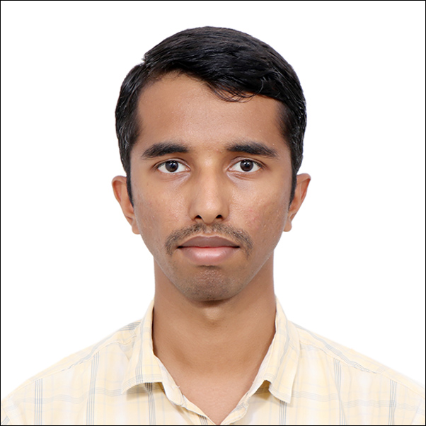

May 2028
University of Pennsylvania
Master of Science in Engineering,
Electrical Engineering
ELECTRICAL ENGINEER · EX-ISRO SCIENTIST
Electrical engineer working at the intersection of
sensing, estimation and detection, signal processing, control systems, and autonomous space systems.

Master of Science in Engineering,
Electrical Engineering
Bachelor of Technology,
Electronics and Communication Engineering (Avionics)
CGPA: 3.29 / 4
GATE 2024 (ECE) — All India Rank 452 out of 63,092 candidates (99.28 percentile).
JEE 2021 — Top 0.6% among 1.3 million candidates overall, with a 99.99 subject percentile in Mathematics.
Regional Mathematics Olympiad 2018 — Awardee, placing in the top 30 in Maharashtra and top 300 among 10,000+ candidates across India.
International Youth Math Challenge — Gold Honour, placing in the top 1% of international participants.
Level 4 certification in Indian Classical Music by Gandharva Mahavidyalaya. Proficient in harmonium and flute, with an interest in supporting research on the 10-finger Dhrupad Flute.
Resources and Inventory Manager at Neptunes Music Club, IIST. Performed and competed with the band Aaroh in intercollege competitions.
Studied Sanskrit as a second language through 10 + 2 education. An avid reader and enthusiast of the language, with plans to pursue it further.
Chief Treasurer and Accountant for Dhanak 2024, the cultural festival of IIST.
Founding member of Money Minds Club, the finance club of IIST.